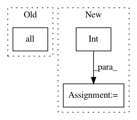

d78c2945c7a52d93e7f158dc0c6e6b6465cb1657,geomstats/learning/preprocessing.py,ToTangentSpace,inverse_transform,#ToTangentSpace#Any#Any#,130
Before Change
if gs.all(Matrices.is_symmetric(base_point)):
tangent_vecs = SymmetricMatrices(
base_point.shape[-1]).symmetric_matrix_from_vector(X)
elif gs.all(Matrices.is_skew_symmetric(base_point)):
tangent_vecs = SkewSymmetricMatrices(
base_point.shape[-1]).matrix_representation(X)
else:
After Change
if self.point_type == "matrix":
n_base_point = base_point.shape[-1]
n_vecs = X.shape[-1]
dim_sym = int(n_base_point * (n_base_point + 1) / 2)
dim_skew = int(n_base_point * (n_base_point - 1) / 2)
if gs.all(Matrices.is_symmetric(base_point)) and dim_sym == n_vecs:
tangent_vecs = SymmetricMatrices(
In pattern: SUPERPATTERN
Frequency: 3
Non-data size: 3
Instances
Project Name: geomstats/geomstats
Commit Name: d78c2945c7a52d93e7f158dc0c6e6b6465cb1657
Time: 2020-04-23
Author: nicolas.guigui@inria.fr
File Name: geomstats/learning/preprocessing.py
Class Name: ToTangentSpace
Method Name: inverse_transform
Project Name: scikit-image/scikit-image
Commit Name: cc31d7f56d6cd8569a5f7b47c254d89a85e8691b
Time: 2017-04-17
Author: grlee77@gmail.com
File Name: skimage/transform/pyramids.py
Class Name:
Method Name: pyramid_laplacian
Project Name: scikit-image/scikit-image
Commit Name: 7d70b5e7dd1f5e33326cb50b339aa0b5c13073c4
Time: 2020-02-19
Author: mail@uweschmidt.org
File Name: skimage/segmentation/_join.py
Class Name:
Method Name: relabel_sequential